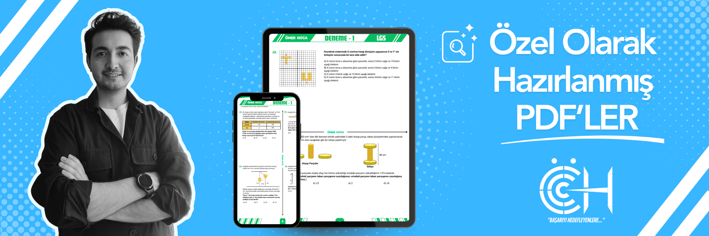
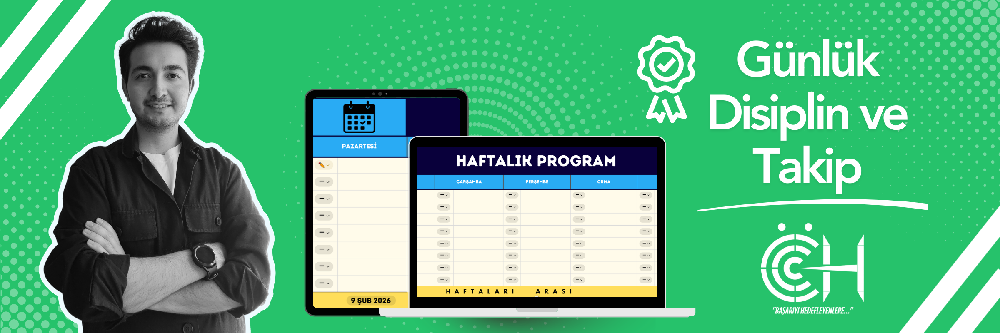
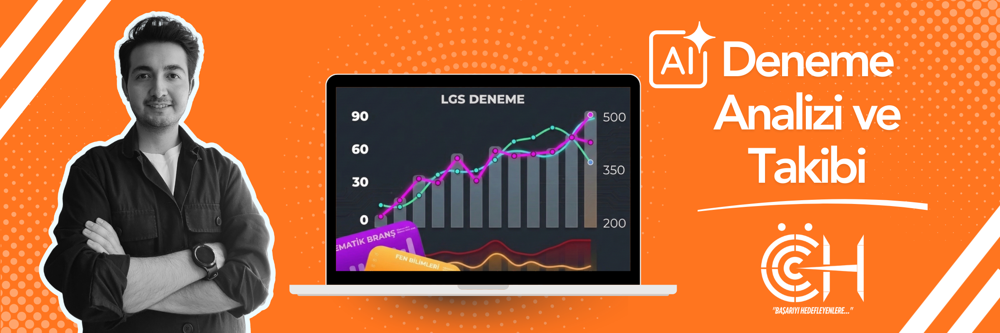
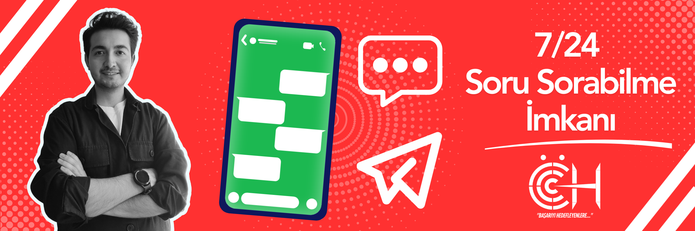
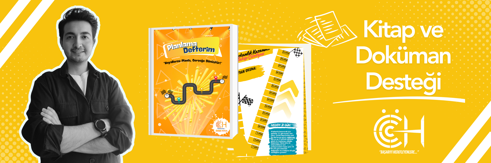

Neden Farklıyız?
Ömer Hoca ile başarıya ulaşanlar deneyimlerini paylaşıyor...
Ömer Hoca ile tanıştıktan sonra kızımın matematiğe olan önyargısı kırıldı. LGS sürecindeki koçluğu muazzamdı.
Deneme analizleri sayesinde hangi konularda eksiğim olduğunu nokta atışı gördüm. YKS'de hedefime ulaştım!
Oğlumun ders çalışma alışkanlığı yoktu. Yapay zeka destekli takip sistemi ve Ömer Hoca'nın ilgisiyle bunu başardık.
Ara sınıfta olmama rağmen temelimi çok sağlam attık. Artık yeni nesil sorulardan korkmuyorum.
7/24 takıldığım soruyu sorabilmek ve anında mantığını öğrenmek harika bir ayrıcalık.
Ömer Hoca'nın verdiği haftalık programı bire bir uyguladık, sanki özel bir antrenör gibiydi.